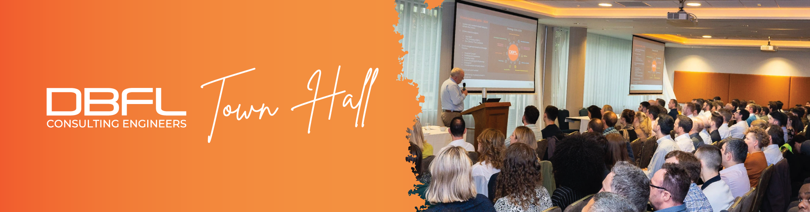

Format / notes
Arrival and lunch before the Town Hall programme begins.
Here's what's happening...
Tap any session below to see the contributors and format/notes. The agenda runs from lunch and arrival through to the motivational speaker at 5pm.
DateFri, 18 Sept 2026
Time12:30pm – 5:00pm
LocationHyatt Centric Hotel, Dublin
Agenda
Click a session to expand
Contributors
DanJohn
Format / notes
Pre-submitted questions.Contributors
AllContributor
Breffni Greene (HJL)Panel
Owen DoyleLeonie LawlerDeclan GuinanFergal English
Format / notes
‘Fireside Chat’ / Panel Discussion.AI survey informs panel reaction, alongside an overview of company AI rollout / training strategy.
Format / notes
Tea / coffee break with Map & Pins.Panel
BillLisaSusanJohn MoloneyColm Quirke
Format / notes
‘Fireside Chat’ / Panel Discussion.Mentimeter informs discussion / reaction.
Contributor
NoreenContributor
External — Jay Chopra